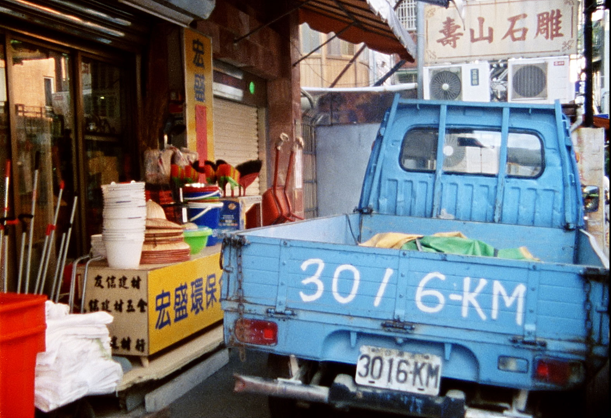
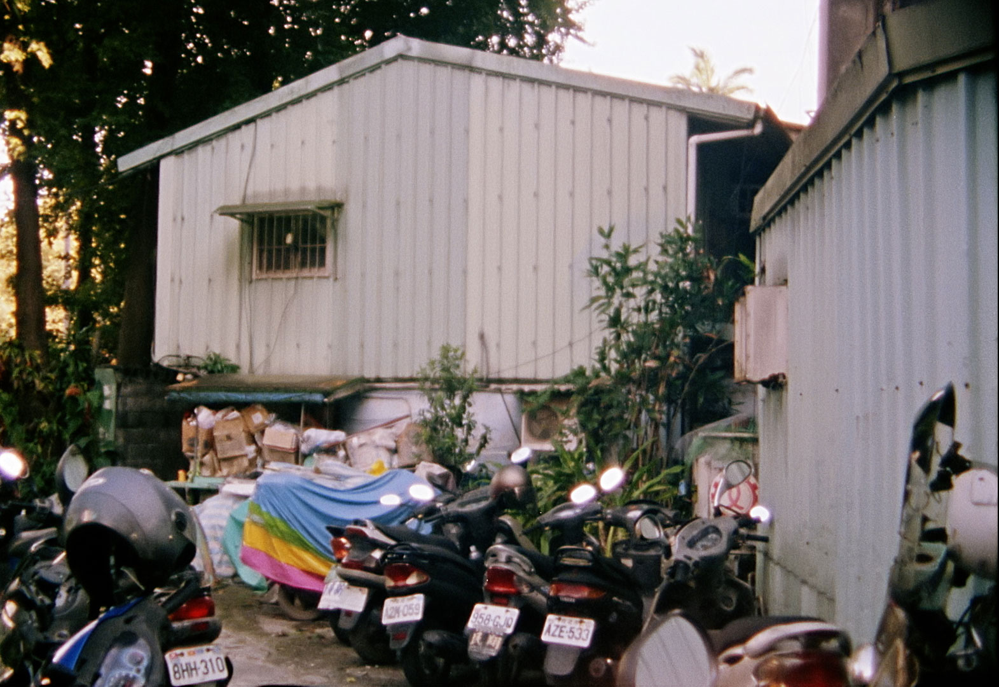
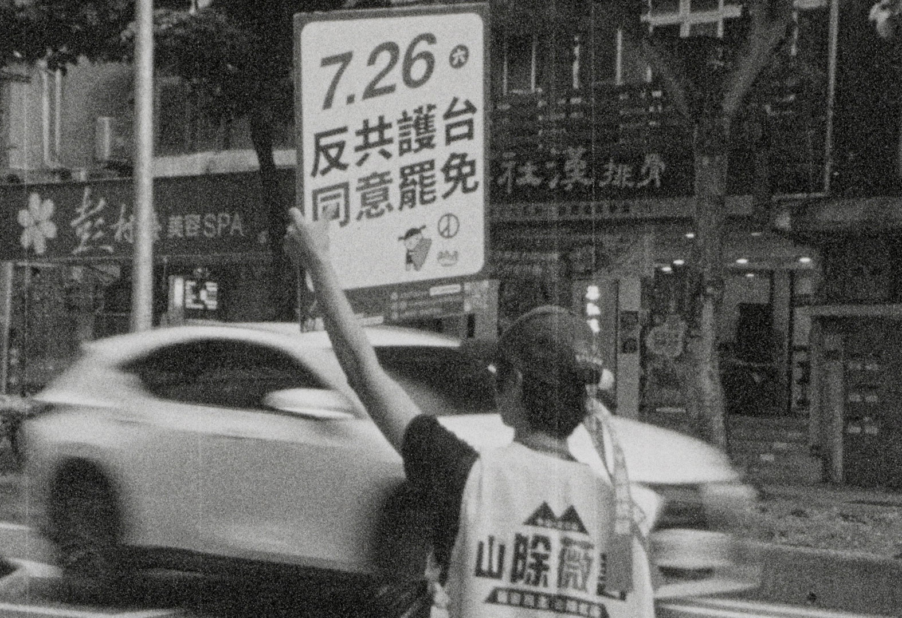
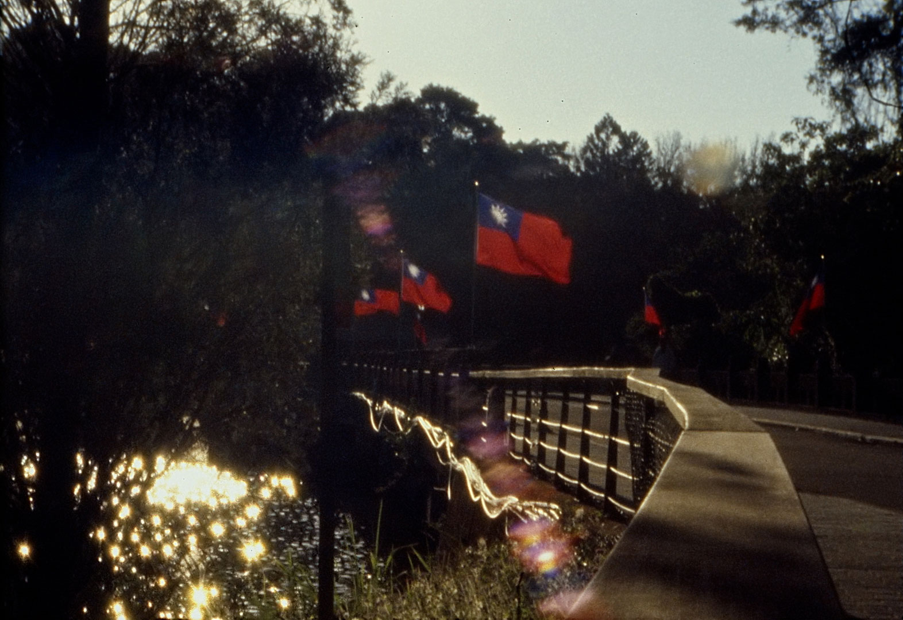

2026
Film
Super-8mm, colour and black and white, sound, 12 mins
The third travels through the symbols of Taiwanese democracy and autonomy —the Legislative Yuan, Liberty Square, the National Human Rights Museum, 228 Memorial Park, TSMC headquarters— juxtaposing them with images of the KMT's authoritarian past: the Chiang Kai-shek Memorial Hall and the Cih-hu Memorial Statue Park. The film concludes in the summer of 2025, during the "Great Recall Wave" —an unprecedented civic campaign to remove dozens of KMT legislators accused of favoring Beijing's interests and undermining Taiwan's defense capabilities, but which ultimately failed.
Since 1949, when the Kuomintang established its government on the island following the Japanese surrender, Taiwan has lived with a singular paradox: functioning as a sovereign democracy while inhabiting a diplomatic limbo; aspiring to a political utopia in which its self-determination might be fully recognized. This film asks: can utopia exist within perpetual ambiguity? Or is it precisely this position between two worlds that constitutes contemporary Taiwanese subjectivity?